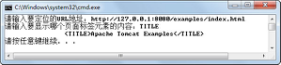

7.4 Java与网络
Java语言从其诞生开始，就和网络紧密联系在一起。在1995年的Sun World大会上，当时占浏览器市场份额绝对领先的网景公司宣布在浏览器中支持Java，从而引起一系列的公司产品对Java提供支持，使得Java很快成为一种流行的语言。之后，Java在面向企业的服务器平台取得了广泛的成功。而如今，在移动互联的世界，随着安卓的异军突起，Java与网络的关系又向前迈进了一步。
7.4.1 IP地址类
在TCP/IP协议族中，我们是通过IP地址来标识网络上的一台主机（含网络设备）的。如果想获取自己主机的IP地址，可以通过打开“Internet协议版本4（TCP/IPv4）属性”对话框方式查看（必须是设置固定IP地址，而不是自动获取IP地址），还可以通过ipconfig命令查看。假设需要在程序中获取本机的IP地址，该如何编写代码呢？
通过查阅JDK API文档获悉，在Java中，使用java.net包下的InetAddress类表示互联网协议的IP地址。下面的案例演示了如何获得本地主机的IP地址。具体代码如下：
import java.net.*;
public class TestGetIP{
public static void main(String args[]) {
InetAddress myIP = null;
try{
//通过InetAddress类的静态方法，返回本地主机对象
myIP = InetAddress.getLocalHost();
}catch(Exception e){
e.printStackTrace();
}
//通过InetAddress类的getHostAddress()方法获得IP地址字符串
System.out.println(myIP.getHostAddress());
}
}
编译、运行程序，显示出本地主机的IP地址。如果不仅想获得本地主机的IP地址，还想根据用户输入的域名，获取这个域名在互联网上的IP地址，下面的代码演示了此功能：
import java.util.Scanner;
import java.net.*;
public class TestGetIP2{
public static void main(String args[]) {
InetAddress sohuIP = null;
Scanner input = new Scanner(System.in);
System.out.print("请输入要查询IP地址的域名：");
String dName = input.next();
try{
//通过InetAddress类的静态方法，返回指定域名的IP地址对象
sohuIP = InetAddress.getByName(dName);
}catch(Exception e){
e.printStackTrace();
}
System.out.println("域名：" + dName + " 对应的IP地址为：" + sohuIP.getHostAddress());
}
}
编译、运行程序，其运行结果如图7.4所示。

图7.4 获取指定域名的IP地址
上面的两个例子中，创建的InetAddress类对象都不是使用构造方法new出这个对象，而是通过InetAddress类的静态方法获取的。下面列出了通过InetAddress类的静态方法获取InetAddress类对象的方法。
- InetAddress[] getAllByName(String host)
在给定主机名的情况下，根据系统上配置的名称服务返回其IP地址所组成的数组。
- InetAddress getByAddress(byte[] addr)
在给定原始IP地址的情况下，返回InetAddress对象。
- InetAddress getByAddress(String host, byte[] addr)
根据提供的主机名和IP地址，创建InetAddress对象。
- InetAddress getByName(String host)
在给定主机名的情况下，返回InetAddress对象。
- InetAddress getLocalHost()
返回本地主机InetAddress对象。
InetAddress类的其他常用方法有以下几种。
- byte[] getAddress()
返回此InetAddress对象的原始IP地址。
- String getCanonicalHostName()
返回此 IP 地址的完全限定域名。完全限定域名是指主机名加上全路径，全路径中列出了序列中所有域成员。
- String getHostAddress()
返回 IP 地址字符串。
- String getHostName()
返回此 IP 地址的主机名。
7.4.2 URL类
Java提供的网络功能的相关类主要有三个，它们分别是URL、Socket和Datagram，其中URL是这三个类中层次级别最高或者说封装最多的类，通过URL类可以直接发送或读取网络上的数据。
URL类代表一个统一资源定位符，它是指向互联网资源的指针。资源可以是简单的文件或目录，也可以是对更为复杂的对象的引用，例如对数据库或搜索引擎的查询。
通常，URL可分成几个部分。例如http://baike.baidu.com/view/29.htm，指示使用的协议为HTTP（超文本传输协议），并且该信息驻留在一台名为baike.baidu.com的主机上，主机上的信息名称为/view/29.htm。
URL 可选择指定一个端口号，用于建立到远程主机 TCP 连接的端口号，例如http://127.0.0.1: 8080/examples/index.html。如果未指定该端口号，则使用协议默认的端口，HTTP协议的默认端口为80。
URL 后面可能还跟有一个片段，也称为引用。该片段由井字符“#”指示，后面跟有更多的字符。例如http://java.sun.com/index.html#chapter1。使用此片段的目的在于表明，在获取到指定的资源后，应用程序需要使用文档中附加有chapter1标记的部分。
图7.4 网络上指定资源页面
下面通过一个案例来演示如何获取网络上指定资源（http://127.0.0.1:8080/examples/index.html）的信息。这个页面的具体内容如图7.4所示，其HTML代码如下：
<!DOCTYPE HTML PUBLIC "-//W3C//DTD HTML 4.0 Transitional//EN">
<HTML>
<HEAD>
<TITLE>Apache Tomcat Examples</TITLE>
<META http-equiv=Content-Type content="text/html">
</HEAD>
<BODY>
<P>
<H3>Apache Tomcat Examples</H3>
</P>[[张彬1\]](#_msocom_1)
<ul>
<li><a href="servlets">Servlets examples</a></li>
<li><a href="jsp">JSP Examples</a></li>
</ul>
</BODY>
</HTML>
这个案例的具体需求为先输入要定位的URL地址，然后再输入要显示哪个页面标签元素的内容，程序显示该标签的具体内容，具体代码如下。
import java.util.Scanner;
import java.net.*;
import java.io.*;
public class TestURL{
public static void main(String args[]){
URL tURL = null;
BufferedReader in = null;
Scanner input = new Scanner(System.in);
System.out.print("请输入要定位的URL地址：");
String url = input.next();
System.out.print("请输入要显示哪个页面标签元素的内容：");
String iStr = input.next();
try
{
//通过URL字符串创建URL对象
tURL = new URL(url);
in = new BufferedReader(new InputStreamReader(tURL.openStream()));
String s;
while ((s = in.readLine()) != null){
if(s.contains(iStr))
System.out.println(s);
}
}catch(Exception e)
{
e.printStackTrace();
}
}
}
编译、运行程序，先后输入http://127.0.0.1:8080/examples/index.html和TITLE，其运行结果如图7.6所示。

图7.6 URL类使用
7.4.3 URLConnection类
前面介绍的URL类代表的是一个网络资源的位置，而接下来要介绍的URLConnection代表的是一种连接。此类的实例可用于读取和写入对应URL 引用的资源。通常，创建一个到URL的连接URLConnection的对象需要以下几个步骤。
（1）通过在 URL 上调用openConnection()方法创建连接对象。
（2）设置参数和一般请求属性。
（3）使用connect()方法建立到远程对象的实际连接。
（4）远程对象变为可用，其中远程对象的头字段和内容变为可访问。
URLConnection类有下列属性作为参数可以设置：
boolean doInput：将 doInput 标志设置为 true，指示应用程序要从 URL 连接读取数据，此属性的默认值为 true。此属性由 setDoInput()方法设置，其值由getDoInput()方法返回。
boolean doOutput：将doOutput标志设置为 true，指示应用程序要将数据写入 URL 连接，此属性的默认值为false。此属性由setDoOutput()方法设置，其值由getDoOutput()方法返回。
long ifModifiedSince：有些网络协议支持跳过对象获取，除非该对象在某个特定时间点之后又进行了修改。其值表示距离格林尼治标准时间1970年 1 月 1 日的毫秒数，只有在该时间之后又进行了修改时，才获取该对象。此属性的默认值为0，表示必须一直进行获取。此属性由setIfModifiedSince()方法设置，其值由getIfModifiedSince()方法返回。
boolean useCaches：如果其值为true，则只要有条件就允许协议使用缓存；如果其值为false，则该协议始终必须获得此对象的新副本，其默认值为上一次调用setDefaultUseCaches()方法时给定的值。此属性由setUseCaches()方法设置，其值由getUseCaches()方法返回。
boolean allowUserInteraction：如果其值为true，则在允许用户交互（例如弹出一个验证对话框）的上下文中对此URL进行检查；如果其值为false，则不允许有任何用户交互，其默认值为上一次调用setDefaultAllowUserInteraction()方法时所用的参数的值。使用setAllowUserInteraction()方法可对此属性的值进行设置，其值由getAllowUserInteraction()方法返回。
URLConnection类还有两个属性connected和url，分别表示是否创建到指定 URL 的通信链接和该URLConnection类在互联网上打开的远程对象。
另外，可以使用setRequestProperty(String key, String value)方法设置一般请求属性，如果已存在具有该关键字的属性，则用新值改写原值。
下面通过一个案例，简要说明URLConnection类的使用。URLConnection类里涉及的一些知识现在还没有涉及，在阅读下面的代码时如果有不明白的地方，通过后面课程的学习会逐步理解。
import java.net.*;
import java.io.*;
public class TestURLConnection{
public static void main(String args[]){
try{
//（1）通过在URL上调用openConnection()方法创建连接对象
URL url = new URL("http://127.0.0.1:8080/examples/index.html");
//根据URL获取URLConnection对象
URLConnection urlC = url.openConnection();
//请求协议是HTTP协议，故可转换为HttpURLConnection对象
HttpURLConnection hUrlC = (HttpURLConnection)urlC;
//（2）设置参数和一般请求属性
//请求方法如果是POST，参数要放在请求体里，所以要向hUrlC输出参数
hUrlC.setDoOutput(true);
//设置是否从httpUrlConnection读入，默认情况下是true
hUrlC.setDoInput(true);
//请求如果是POST，不能使用缓存
hUrlC.setUseCaches(false);
//设置Content-Type属性
hUrlC.setRequestProperty("Content-Type", "text/plain; charset=utf-8");
//设定请求的方法为POST，默认是GET
hUrlC.setRequestMethod("POST");
//（3）使用connect方法建立到远程对象的实际连接
hUrlC.connect();
//（4）远程对象变为可用
//通过HttpURLConnection获取输出输入流，可根据需求进一步操作
OutputStream outStrm = hUrlC.getOutputStream();
InputStream inStrm = hUrlC.getInputStream();
//省略若干代码
}catch(Exception e){
e.printStackTrace();
}
}
}